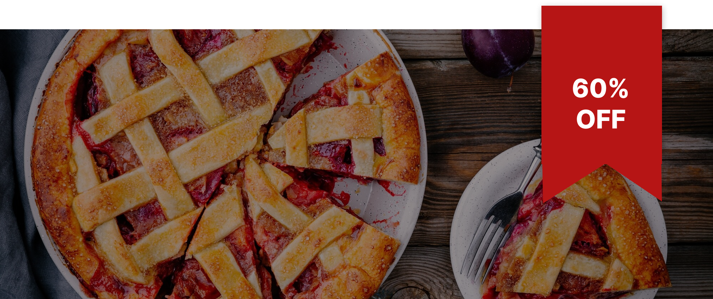

Donut
A doughnut or donut (IPA: /doʊnət/) is a type of leavened fried dough.
Multigrain
Multigrain bread is a type of bread prepared with two or more types of grain.
White
Satisfactory white bread can be made from flour, water, salt, and yeast. (A “sourdough” addition may be substituted for commercial yeast.)
Dear, customers.
“A cherry pie is . . . ephemeral. From the moment it emerges from the oven it begins a steep decline: from too hot to edible to cold to stale to mouldy, and finally to a post-pie state where only history can tell you that it was once considered food. The pie is a parable of human life.”
They said,
"Bake The World A Better Place."
Favorite Apple Pie in the Town!
Meet everyone's all time favorite. Bring on the perks! Better together.
An apple pie is a pie in which the principal filling ingredient is apple, originated in England. It is often served with whipped cream, ice cream, or cheddar cheese. It is generally double-crusted, with pastry both above and below the filling; the upper crust may be solid or latticed.
Pie
A pie is a baked dish which is usually made of a pastry dough casing that contains a filling of various sweet or savoury ingredients.
Cake
Cake is a form of sweet food made from flour, sugar, and other ingredients, that is usually baked.